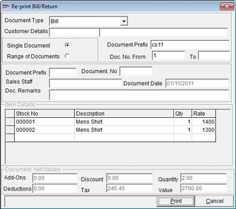

Bills or Sales Return Slips can be reprinted, if they are lost or damaged while printing earlier.
The Re-print Bill/ Return window is as shown.

Document Type: Select the document type, i.e., Bill or Returns from the drop down list.
Customer Details: Press F2 and browse for the customer details or enter the details.
Single Document: Select if a single document is to be reprinted.
Range of Documents: Select if many documents are to be reprinted.
Document Prefix: Enter the Document Prefix of the Bill/ Sales Return to be reprinted.
Doc. No. From and To: Enter the document number of the Bill/ Sales Return to be reprinted. Enter the document number of the first transaction in From field and document number of the last transaction in To field, if a range of documents is to be reprinted.
Document Prefix: The document prefix of the selected Bill/ Sales Return is displayed in this field.
Document No: The document number of the selected Bill/ Sales Return is displayed in this field.
Sales Staff: The code of the sales staff who prepared the selected Bill/ Sales return is displayed in this field.
Document Date: The document date is displayed in this field.
Doc. Remarks: The remarks of the selected document is displayed in this field.
Item Details: The item details of the selected document are displayed in this grid.
Document Net Values: Displays the net values of the entered document number, i.e., Add-ons, Deductions, Discounts, Tax, Quantity or number of items present in the transaction and the net value of the document (Bill/ Sales Return), in the respective fields.